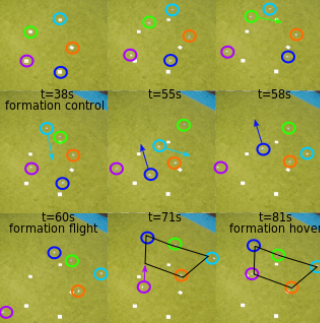

PhD Research on Swarm Robotics
Multi-robot Systems; Localization; Nonlinear Control; Deep Learning for Tiny Robots

A Fully Autonomous Swarm of Tiny Flying Robots
An autonomous 3D multi-robot system is designed without relying on any external GPS or motion capture systems. The relative position and bearing are estimated onboard by fusing sensory information (velocity, yaw rate, height, and ranging from Ultra wide-band sensor).
[Paper]
[Video]
[Code-simulation]
[Code-robot]